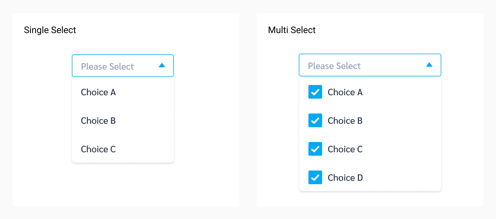

Dropdown
Dropdown ช่วยให้ user สามารถเห็นและเลือกตัวเลือกต่างๆ ได้ในครั้งเดียว
Types
| Types | Purpose |
|---|---|
| Single Select | ให้ user เลือกตัวเลือกแบบทีละอัน |
| Multi Select | ให้ user เลือกของแบบหลายตัวเลือกได้ (Multiple Choices) |
Spec
ขนาดของ drodpown ที่เล็กที่สุดไม่ควรต่ำกว่า 115px และไม่เกิน 300px

กรณีที่เป็น Multi-select dropdown ขนาดของ Icon ด้านหน้าจะมีขนาด 18x18px
Example
The following HTML code is based off the Ahancer Seed
Primary Button
Secondary Button
Tertiary Button
Ghost Button
Usage
การใช้ Dropdown จะเข้ามาช่วยในกรณีที่ user ต้องเลือกและระบบมีตัวเลือกให้เยอะ ซึ่งการที่จะวาง ตัวเลือกทั้งหมดออกมาเป็น list จะทำให้กินพื้นที่หน้าจอเยอะเกินไป Dropdown จะเข้ามาเป็นตัวช่วยที่จะรวมตัวเลือกเหล่านั้นให้อยู่ในอันเดียว ซึ่งจะทำให้ user สามารถใช้งานตัวเลือกเหล่านั้นได้ง่ายขึ้น
เมื่อไหร่ที่ควรใช้ Dropdown ?
- มีตัวเลือกให้ user เลือกมาก และมีพื้นที่หน้าจอแสดงผลน้อย ทำให้ user ใช้งานลำบาก เช่น บน screensize ของมือถือ
- User ต้องทำการเลือกตัวเลือก เพื่อใช้งานบางสิ่งในพื้นที่หน้าจอเดียวกัน ซึ่งไม่มีที่ให้แสดงตัวเลือกแบบ List
เมื่อไหร่ที่ไม่ควรใช้ Dropdown ?
- กรณีมีพื้นที่หน้าจอเยอะ และมีตัวเลือกเพียงเล็กน้อย (เช่น 2-3 ตัวเลือก)
- กรณีตัวเลือกแต่ละอันสำคัญ และจำเป็นต้องเลือก เพื่อทำ action ต่อไปที่เป็น action หลัก